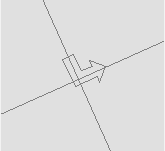
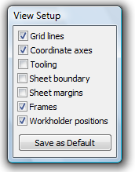

Zoom, Pan and Origin
Shift Origin
Shift Origin

This tool is used to set up a different coordinate system for drawing. This coordinate system is called the user coordinate system.
You can set up some point in your drawing that becomes the new origin, and also the rotation angle by which the coordinate system is rotated, relative to the horizontal. All subsequent coordinates that you enter in the input bars are in this new coordinate system. The user coordinate system remains in effect until it is reset by holding down the Ctrl key and clicking on the drawing, while in the Shift Origin mode. If a user coordinate system is in effect, a marker as shown in the figure alongside is displayed. This marker is positioned at the origin, and the arrowhead points in the direction of the positive X-axis. Instead of typing in values into the OriginX, OriginY and Angle input boxes, you can also setup the coordinate system using two mouse clicks. The first-clicked point becomes the origin, and the angle to the second-clicked point defines the rotation angle.
Redraw
Redraw
Click this button to request for a repaint of the screen. This may be sometimes needed to remove blips, or markers, left behind on the screen by an earlier command. Also, when you delete an entity that coincides with another entity, the second entity may not be seen until you click the redraw button.
Zoom
Zoom
-
This button is used to zoom in and out of a drawing. Here are different ways in which the zoom mode can be used.
-
Type in a zoom factor and press Enter. The centre of the drawing remains unchanged, while the drawing itself is scaled by the factor you enter. Factors less than 1 zoom out, while factors greater than 1, zoom in.
-
Click, hold down the mouse button and drag. This displays a rubber band rectangle on the screen that defines the area of interest and when you release the mouse button that area expands to fill the entire window. n Hold down Ctrl and click, to zoom back to your previous view.
-
Hold down Shift and click to zoom back to the extents of the entire drawing. n Hold down Alt and click to zoom out by a factor of 0.5
Other navigation mechanisms
In addition to the zoom command on the drawing editor toolbar, there are some other methods in which you can navigate about the drawing:
-
Pressing Ctrl+E at any time (even halfway through a command) will cause to zoom out so that the entire drawing area is visible.
-
Pressing Ctrl+W at any time (even halfway through a command) will cause to temporarily suspend that command, and switch into a zoom mode. The prompt bar at this time will read "Click, drag and release to zoom in and resume the previous command". After you have clicked, dragged and released to define an area of interest, will zoom in and the command will resume.
-
If you have a mouse with a mouse wheel, you can also use the mouse wheel to zoom and pan. To zoom in, roll the wheel forward, and to zoom out, roll the wheel backward. To pan the drawing without changing the zoom level, click the mouse wheel, and drag the mouse while holding the mouse wheel down. These navigation modes can be used at any time, even when you are halfway through a command.
View Setup
View Setup
This button brings up the View Setup dialogue. The options on this dialogue allow you to turn on and off various display elements in the drawing window.

Grid lines: Turn on or off the grid display. The grid spacing can be set using the Snap Grid button.
Coordinate axes: Turn on or off the coordinate axes display. If the axes are turned on, you can snap to the axes, or to the origin.
Tooling: Turn on or off the laser and punch tooling or the part. If tooling is turned on, you can snap to all tooling geometry.
Sheet boundary: Displays the sheet boundary & margin lines, which the sheet is Aqua and margins are grey.
Sheet margins: Display the margins you have placed on the four edges of the sheet, by displaying a margin rectangle inside the sheet boundary in grey.
Frames: Display the machine’s working frames (stroke /over-travel limits).
Work holder positions: Display the clamp positions for each frame. If there are multiple frames, the frame numbers are displayed under each clamp. The clamps for the first frame are displayed in solid lines, and for the other frames in dotted lines.